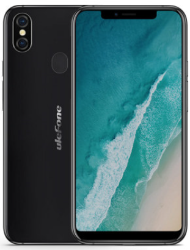

Ulefone komt nu met een nieuwe telefoon die niet voldoet aan de laatste Uletrends, namelijk die van de rugged phones of de lange batterijduurtelefoons. Ze komen gewoon met een nieuwe strak design en hebben zelf het toestel al een cijfer gegeven: een 10, de Ulefone X.
Strak vormgegeven met randloos scherm, metallic uitgave, klaar voor draadloos opladen en snelladen. Goeie camera's, ruime opslag, dubbele sim, gezichtsherkenning, allemaal opties die de huidige standaard zijn.
Met speciale aandacht voor het geluid met de AW 8736 audio chipset en een hoge geluidskwaliteit box speaker.
e Ulefone X wordt uitgegeven in metallic zwart en metallic wit.
Kortom: mooi, strak en goed!
Specificaties:
| Scherm | 5.8 Inch |
| Opslagcapaciteit | 64GB (Uit te breiden met SD Card tot 265 GB) |
| Snelheid | 2.0 GHz, 64 BIT Octa Core |
| RAM | 2 GB |
| Camera | Achter: 16 MP + 5MP ; 13 MP Front |
| SIM-Kaarten | 2x Nano |
| Android | 8.1 Oreo |
| Netwerk | 4G |
| Specialiteiten | Goed Geluid |
| Snellader | |
| Gezichtsherkenning | |
| FM RAdio | |
| Geluid | |
| Draadloos oplaadbaar |
€249.00